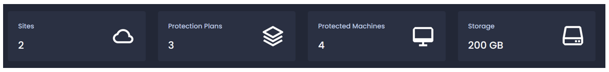
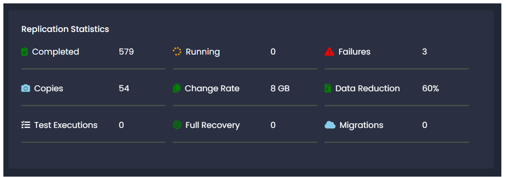

Dashboard
The Dashboard provides you with an at-a-glance overview of the data protection status of your environment.
The Dashboard contains the following features.
Title Windows
Title windows will give overall status on your configured and protected environment.
| Title | Description |
| Sites | Sites configured on the node. |
| Protection Plans | Protection plans configured. |
| Protected Machines | Total number of protected virtual machines. |
| Storage | Overall protected storage size. |
Replication Statistics
Replication statistics Provides a central snapshot overview of your replication and recovery jobs.
| Label | Description |
| Completed | Successfully completed replication iterations. |
| Running | Replication iterations are in-progress. |
| Failed | Failed replication iterations. |
| Test Executions | Test executions completed successfully. |
| Full Recovery | Virtual machines recovered successfully. |
| Migrations | Virtual machines migrated successfully. |